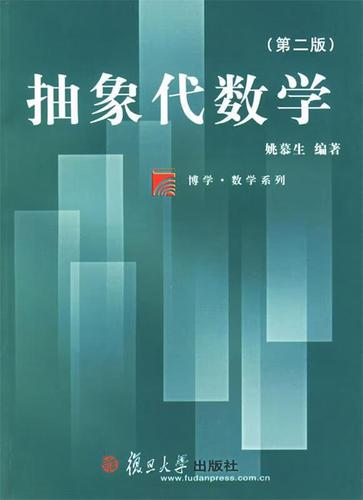

简介：抽象代数（Abstract algebra）又称近世代数（Modern algebra），它产生于十九世纪。伽罗瓦（1811 ~ 1832）在1832年运用群的概念彻底解决了用根式求解多项式方程的可能性问题。他是第一个提出群的概念的数学家，一般称他为近世代数创始人。他使代数学由作为解代数方程的学科转变为研究代数运算结构的学科，即把代数学由初等代数时期推向抽象代数。 抽象代数包含群论、环论、伽罗瓦理论、格论、线性代数等许多分支，并与数学其它分支相结合产生了代数几何、代数数论、代数拓扑、拓扑群等新的数学学科。抽象代数也是现代计算机理论基础之一。
预期开设时间：2023年夏季学期
教材：姚慕生.抽象代数学.2版.上海：复旦大学出版社，1998.
推荐参考书：
更多学习资料以及下载方式 详见：学习资料
©2023 吉林大学数学社